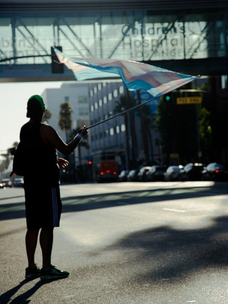
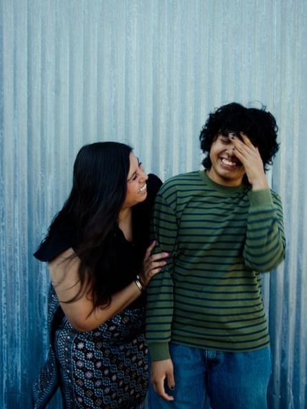
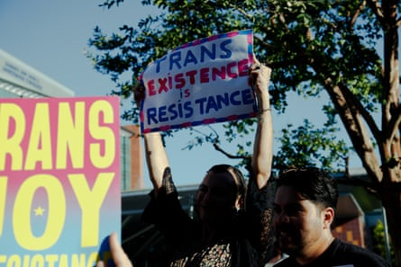
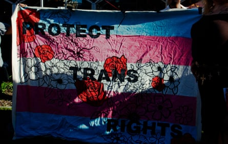

E li, a 16-year-old Los Angeles student, is spending his summer juggling an internship at a natural history museum, a research project, a physics class and cheer practice – and getting ready to apply for college.
But in recent weeks, he has been forced to handle a more urgent matter: figuring out how he is going to access vital medical treatments targeted by the Trump administration .
Last month, Eli was stunned to get an email alerting him that Children’s hospital Los Angeles (CHLA) was shutting down its Center for Transyouth Health and Development, which had provided him critical healthcare for three years. The center, which has served transgender youth for three decades, offered Eli counseling and helped him access gender-affirming hormone therapy that he said allowed him to live as himself and flourish in school.
CHLA said it was shuttering the center due to the federal government’s threats to pull funding, part of the president’s efforts to eradicate trans youth healthcare. The move has forced Eli and his mother to scramble for alternatives, taking time out of his busy summer to contact new providers and ensure he doesn’t run out of medications.
California became the first sanctuary state for trans youth healthcare in 2022 and has long positioned itself as having the strongest protections for LGBTQ+ children. Now, for families like Eli’s, it feels like that safety is rapidly disappearing.
A protester stands at a roadside waving a trans flag as people honk in solidarity at Children’s Hospital LA.Photograph: Alexandra Isabella/The Guardian
“I was always worried for people in conservative states and had a lot of fear for my community as a whole. But I never thought it would directly affect me in California,” Eli said on a recent afternoon, seated with his mom at a Latino LGBTQ+ organization in Boyle Heights. “I wish people understood they’re doing so much more harm than they could possibly imagine – that so many lives will be hurt and lost and so many people torn apart.”
Eli is one of nearly 3,000 patients who learned on 12 June they would be abruptly losing their healthcare at CHLA, one of the largest and most prominent centers in the nation to treat trans kids. Then, on 24 June, Stanford Medicine revealed it had also paused gender-affirming surgeries for trans minors and 18-year-olds, with reports that some families had appointments suddenly canceled and leaving other patients fearful it was the beginning of a wider crackdown on their care.
Families across California told the Guardian they were exploring options to stockpile hormones, researching how to get care outside the US, growing increasingly fearful that parents could face government investigations or prosecutions, and discussing options to permanently flee the country.
CHLA, in a letter to staff, said its decision to close the trans center was “profoundly difficult”, but as California’s largest pediatric safety net provider, it could not risk losing federal dollars, which makes up a majority of its funds and would affect hundreds of thousands of patients. Stanford said its disruption in services followed a review of “directives from the federal government” and was done to “protect both our providers and patients”.
“This is Los Angeles – how can this be happening here?” said Emily, Eli’s mother, who is an educator; the Guardian is identifying them by only their first names to protect their privacy. “My parents left their Central American countries for a better life – fleeing poverty and civil war, and I cannot believe I’m sitting here thinking: what would be the best country for my family to flee to, as so many immigrant families have done? I never thought I might have to leave the US to protect my son.”
‘This care gave me my life’
Katie, a 16-year-old film student who lives two hours outside Los Angeles, started going to CHLA for gender-affirming care in 2018 when she was nine. For several years, the care involved therapy and check-ins, but no direct medical interventions. Throughout that time, Katie was consistent about her identity as a girl, which CHLA providers supported.
“It was so meaningful and incredible for them to say: ‘We see you for who you are, but also you can be who you are,’” recalled Katie, who asked to go by a pseudonym to protect her privacy. “It was like, I have a future. I’ll get to have my life.”
In gender-affirming care , young children may first socially transition by using new names, pronouns and clothes. When youth are persistent about their gender, doctors can consider prescribing puberty blockers, which pause puberty, and eventually hormone therapies that allow for medical transition. Trans youth surgeries are rare .
Eli, who came out as trans while in middle school during pandemic lockdowns, said it was hard to return to school when he felt so uncomfortable in his body.Photograph: Alexandra Isabella/The Guardian
The treatment has for years been considered the standard of care in the US, endorsed by major medical groups, including the American Academy of Pediatrics and the American Medical Association , and linked to improved mental health. In recent years, Republicans have passed bans on gender-affirming care in more than 25 states , and Trump has called the treatments “chemical and surgical mutilation”. There has also been a growing international backlash against the care, including in the UK, which has banned puberty blockers for trans kids.
Last month, the US supreme court upheld Tennessee’s ban on gender-affirming care for trans youth. Families and civil rights groups have argued the bans are discriminatory , as cisgender children can still receive the same treatments; cis boys with delayed puberty may be prescribed testosterone, for example, while trans boys cannot.
Katie, who was eventually prescribed puberty blockers and hormones, broke down crying recounting how the care saved her. “Sometimes I think: What would my life be if I never got this?” she said. “And I just don’t see myself here. I can’t see myself at 16 if I didn’t come out and transition … Losing this now would destroy my life.”
Sage Sol Pitchenik, a 16-year-old CHLA patient, who is non-binary, said the care helped them overcome debilitating depression caused by their severe gender dysphoria: “Every day, I couldn’t even get up because I just didn’t want to see myself, not even my reflection in the window. I was so terrified to look at my body.”
They compared the care to the essential treatment their twin brother had earlier received at the same institution: a liver transplant. “CHLA saved my life, just like they saved my brother,” they said.
Eli, who came out as trans while in middle school during pandemic lockdowns, said it was hard to return to school when he felt so uncomfortable in his body. At the start of high school, he avoided making friends: “I’m really sociable. I love talking to people and joining clubs, but I felt restricted because of how embarrassed I felt and scared of how people would react to me.”
The testosterone therapy helped restore his confidence, he said, recounting “euphoric moments” of his transition: growing facial hair, his voice deepening, staying in the boys’ cabin at camp. His friends celebrated each milestone, and his mom said the positive transformation was obvious to his whole family: “It was like day and night – we are a traditional Latino Catholic family, but they were all loving and accepting, because he is such a happier kid.”
Eli and his mother at the Latino Equity Alliance in Los Angeles.Photograph: Alexandra Isabella/The Guardian
‘Treating our kids as disposable’
CHLA started treating trans children around 1991, and that legacy was part of its appeal for parents. “It’s not just the best place in LA to get care, it’s also one of the most important research centers in the country,” said Jesse Thorn, a radio host who has two trans daughters receiving care there.
Critics of gender-affirming care have claimed that vulnerable youth are rushed into transitioning without understanding treatment consequences, and that there is not enough research to justify the care. CHLA, Thorn said, countered those claims; families have appointments and build long-term relationships with doctors, psychologists, psychiatrists and social workers. The process is slow and methodical, and the center was engaged in extensive research on the effects of treatments, he said.
“The youth most in danger with the clinic closing are those with parents who aren’t sure about this care,” Thorn added. “That’s a lot of parents. They’re not hateful bigots. They’re overwhelmed and scared, and the institution means a lot.”
Since the news broke, protesters have organized weekly demonstrations in front of CHLA to call for their healthcare to be restored.Photograph: Alexandra Isabella/The Guardian
One LA parent, who requested anonymity to protect her trans son’s privacy, said she knew parents who traveled from Idaho to get CHLA’s care: “It really was a beacon of the entire western United States. It is a remarkable loss.”
Parents told the Guardian that they were putting their children on waitlists at other clinics and beginning intake processes, but remained worried for families who have public health insurance and fewer resources.
Like CHLA, Stanford has long researched and championed trans youth healthcare. The prestigious university’s recent pullback on care only affects surgeries, which are much more rare than hormone therapy and puberty blockers. But families whose care has remained intact, for now, say they are on edge.
“There’s a constant feeling of not knowing what you need to prepare for,” said one mom of a 17-year-old trans boy, who said her son waited six months to first be seen by Stanford. “We all understand the pressures the doctors and institutions are under. But ceding the surgeries doesn’t mean the pressure will end. It’s just showing us our kids are seen as disposable.”
Parents and advocates say they fear that other institutions could follow CHLA and Stanford, particularly as the White House significantly escalates attacks in ways that go far beyond funding threats.
Fears of prosecution
Trump’s focus on California trans youth and gender-affirming care has been relentless. The president has directly attacked a 16-year-old trans track runner , with the US justice department and federal Department of Education fighting, so far unsuccessfully , to force the state’s schools to ban trans female athletes and bar trans girls from women’s facilities. Trump has threatened to withhold billions of dollars in education funding over a state law meant to prevent schools from forcibly outing LGBTQ+ youth to their parents.
Perhaps most troubling for families and providers, the FBI has said it is investigating providers who “mutilate” children “under the guise of gender-affirming care”, and the DoJ said this week it had issued subpoenas to trans youth clinics and doctors.
This has led to growing fears that the US will seek to prosecute and imprison clinicians, similar to efforts by some Republican states to criminally charge abortion providers . Many parents say they worry they could be targeted next.
“There’s an outcry of terror,” said another LA mother of a trans child. “It feels like there is a bloodlust to jail any doctor who has ever helped an LGBTQ+ kid. There’s this realization that the world is constricting around us, and that any moment they could be coming for us.”
Some families hope that California will fight back, but are wary of how committed the governor, Gavin Newsom , really is. Newsom faced widespread backlash in March when he hosted a podcast with a conservative activist and said he agreed with the suggestion that trans girls participating in sports was “deeply unfair”.
California’s department of justice, meanwhile, has repeatedly emphasized that when institutions withhold gender-affirming care for trans youth, they are violating the state’s anti-discrimination laws .
A spokesperson for Rob Bonta, the state’s attorney general, said Trump was “seeking to scare doctors and hospitals from providing nondiscriminatory healthcare”: “The bottom line is: this care remains legal in California … While we are concerned with the recent decisions by CHLA, right now we are focused on getting to the source of this problem – and that’s the Trump administration’s unlawful and harmful threats to providers.”
A CHLA spokesperson shared a copy of its staff letter, noting that Trump’s threats to its funding came from at least five federal departments, and saying it was working with patients to identify alternative care and would “explore” reassigning affected employees to other roles. A Stanford spokesperson did not answer questions about how many patients were affected by its recent changes, but said in an email it was “committed to providing high quality, thorough and compassionate medical services for every member of our community”.
Kush Desai, a White House spokesperson, said in an email that Trump has a “resounding mandate” to end “unproven, irreversible child mutilation procedures”, adding: “The administration is delivering.”
Katie’s mother said she expected the state’s leaders to do more: “The quiet from the governor and others on trans rights is very unsettling. My husband and I grew up in California, went to public schools here, and always thought we’d be safe here and that the state would hold the line. It’s hard to tell right now if that’s true.”
Izzy Gardon, Newsom’s spokesperson, defended the governor, saying in an email that his “record supporting the trans community is unmatched”.
“Everyone wants to blame Gavin Newsom for everything. But instead of indulging in Newsom-derangement syndrome, maybe folks should look to Washington.”
‘We can’t be quiet’
Affected youth are increasingly speaking out. Since the news broke, protesters have organized weekly demonstrations in front of CHLA to call for the healthcare to be restored.
At one recent evening rally, organized by the LA LGBT Center, families and supporters marched and chanted outside the busy hospital on Sunset Boulevard, holding signs saying “Trans joy is resistance” and “blood on your hands”, and at one point shouting: “Down with erasure, down with hate, shame on CHLA!”
Protesters hold a handmade flag at the Children’s Hospital protest.Photograph: Alexandra Isabella/The Guardian
“We can’t be quiet any more. We’ve been polite for too long and taken so much bullshit from people who hate us,” said Sage, who spoke at an earlier rally. “I didn’t stand up just for myself or the people affected by this, but also for the trans people who came before us who still have incorrect names on their graves, who don’t have a voice.” Sage, who is now in a creative writing program, said they hoped to become a journalist.
Katie, who aspires to be a television writer in LA, said she could not be silent as anti-trans advocates force families to consider fleeing: “How dare you try to drive me out of the place where I was born, where my best friends are, where the job I want to do is, where I’ve experienced my whole life? This is my home.”
Eli said he didn’t feel as if he was being an activist. He was simply asking for the “bare minimum”: to be left alone and able to access basic healthcare. “Trans services like hormone therapy truly saves lives,” he said. “We just want people to be able to live their lives. I’m just asking for what is commonsense.”